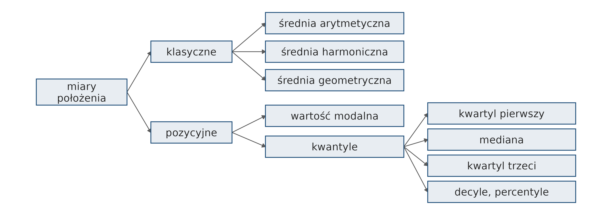
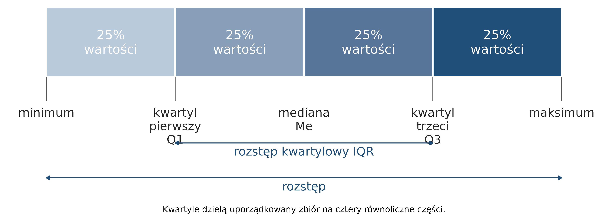
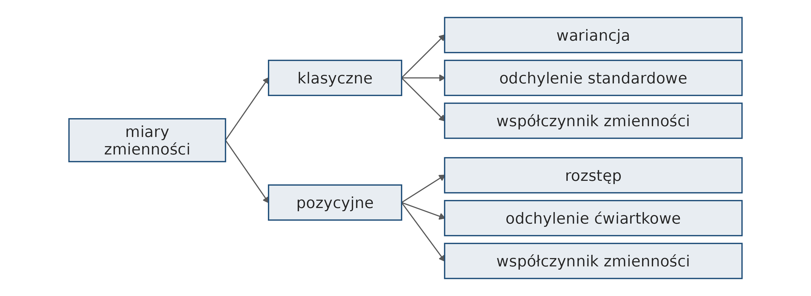
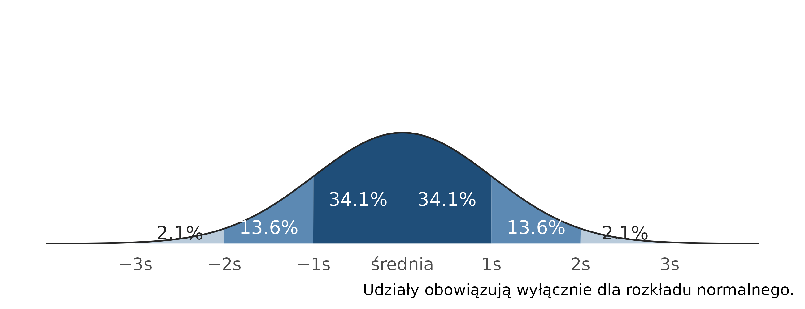
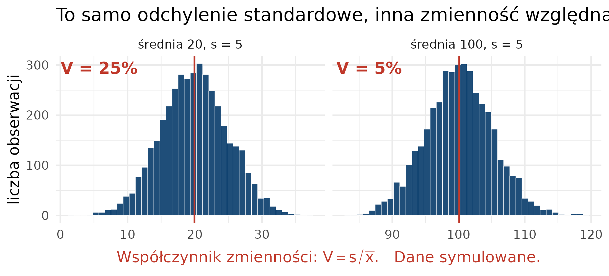
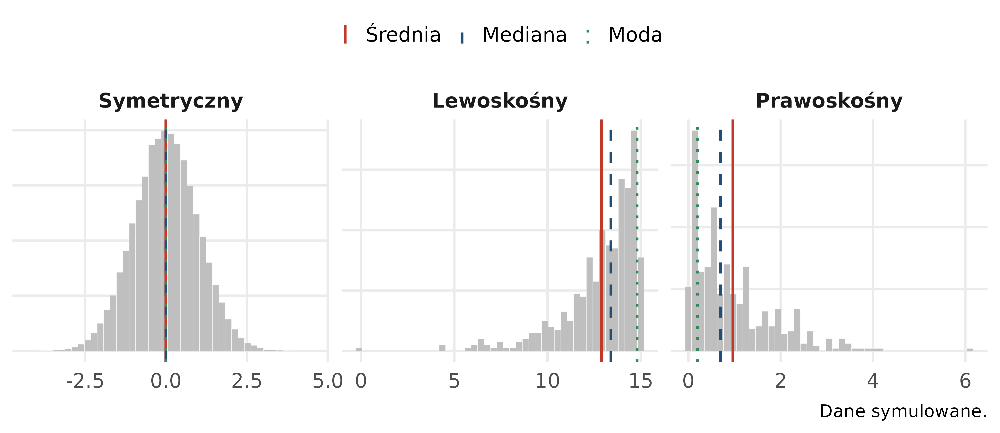
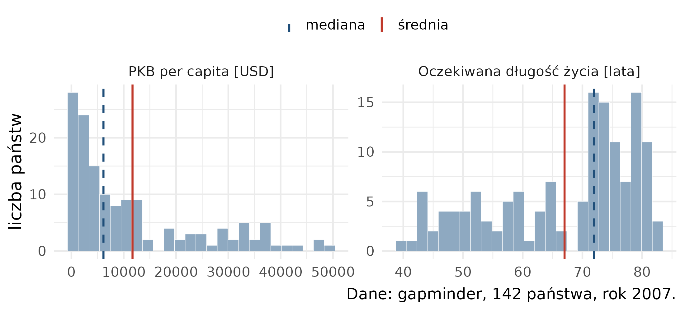
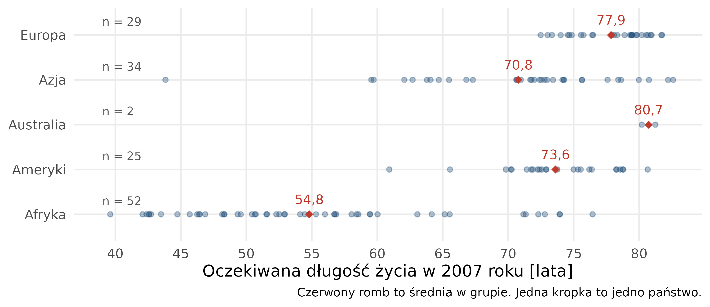
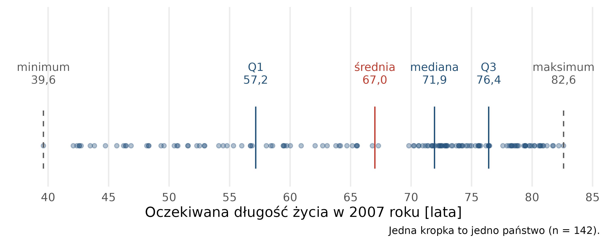
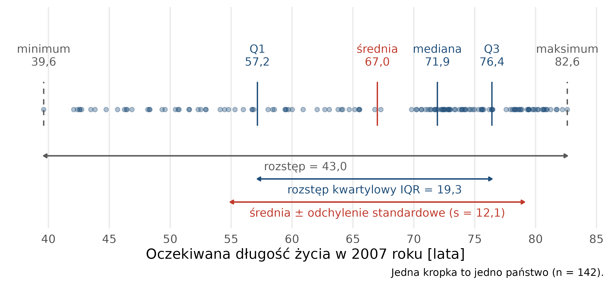

# wczytanie pakietów i danych; obserwacje z 2007 roku
library(tidyverse)
dane <- read.csv("dane/gapminder_regions.csv", encoding = "UTF-8") |>
mutate(across(where(is.character), as.factor))
dane2007 <- dane |>
filter(year == 2007)10 Statystyki opisowe
Rozdział przedstawia statystykę opisową: miary położenia, zmienności i asymetrii oraz statystyki dla cechy jakościowej. Dobór miary zależy od skali pomiarowej zmiennej (Sekcja 9.3). Na końcu rozdziału sekcja „Obliczenia w R” pokazuje, jak obliczyć omówione miary na danych Gapminder. Wykresy przedstawiające statystyki opisowe omawia Rozdział 15.
Kod sekcji „Obliczenia w R” jest dostępny w pliku kod/10_statystyki_opisowe.qmd.
10.1 Statystyka opisowa
Statystyka opisowa zajmuje się zbieraniem, organizacją, analizowaniem i prezentacją danych statystycznych w celu opisania i podsumowania ich charakterystyk. Jej celem jest przejrzyste podsumowanie zbioru danych i sformułowanie podstawowych wniosków na jego temat. Statystykę opisową stosuje się zwykle jako pierwszy krok analizy danych.
Parametry statystyczne to liczby służące do syntetycznego opisu struktury zbiorowości statystycznej. Dzielą się na miary położenia, miary zmienności oraz miary asymetrii.
10.2 Miary położenia
Miary położenia określają przeciętny poziom wartości cechy oraz umiejscowienie typowych wartości cechy na osi liczbowej.
- Miary klasyczne — ich wartość wyznacza się na podstawie wszystkich obserwacji.
- Miary pozycyjne — ich wartość zależy tylko od wybranych obserwacji ze zbioru uporządkowanego.
Wśród miar położenia wyróżnia się miary przeciętne (miary tendencji centralnej): średnie, wartość modalną i medianę. Charakteryzują one przeciętny poziom zmiennej.

10.2.1 Średnia arytmetyczna
Średnia arytmetyczna jest najczęściej stosowaną miarą położenia. Oblicza się ją na podstawie wszystkich obserwacji:
\[ \bar{x}=\frac{1}{n}\sum_{i=1}^n x_i=\frac{x_1+x_2+\ldots+x_n}{n} \]
Średnia jest wrażliwa na wartości odstające (ang. outliers) — obserwacje, których wartość wyraźnie odbiega od większości pozostałych.
10.2.2 Wartość modalna
Wartość modalna (moda, dominanta, wartość najczęstsza) to wartość cechy, która w zbiorze danych występuje najczęściej.
10.2.3 Kwantyle i kwartyle
Kwantyle to wartości cechy, które dzielą uporządkowany zbiór danych na części o określonej liczbie jednostek: kwartyle — na 4 części, decyle — na 10 części, percentyle — na 100 części.

- Kwartyl pierwszy (Q1) — 25% jednostek ma wartości cechy niższe bądź równe Q1, a 75% — równe bądź wyższe.
- Mediana (Me, kwartyl drugi) — połowa jednostek ma wartości cechy mniejsze bądź równe medianie, a połowa — równe bądź większe.
- Kwartyl trzeci (Q3) — 75% jednostek ma wartości cechy niższe bądź równe Q3, a 25% — równe bądź wyższe.
10.2.4 Mediana
Mediana jest wartością środkową uporządkowanego zbioru danych. Przy nieparzystej liczbie obserwacji jest równa wartości środkowej:
- 12, 15, 16, 18, 21 → mediana: 16
\[Me = x_{\frac{n+1}{2}}\]
Przy parzystej liczbie obserwacji mediana jest średnią z dwóch wartości środkowych:
- 12, 15, 15, 16, 18, 21 → mediana: (15 + 16) / 2 = 15,5
\[Me = \frac{1}{2} \left(x_{\frac{n}{2}} + x_{\frac{n}{2}+1}\right)\]
Mediana nie zależy od wartości skrajnych i można ją stosować do zmiennych w skali porządkowej. Medianę często podaje się razem ze średnią arytmetyczną; różnica między nimi wskazuje na asymetrię rozkładu (Sekcja 10.4).
10.2.5 Przykład: średnia i mediana wynagrodzeń
W trzech firmach zatrudniających po 10 osób średnie wynagrodzenie wynosi 5000 zł (przykład z bloga statystycznego https://statystyczny.pl/srednio-na-jeza-czyli-srednia-arytmetyczna/):
| Firma | Wynagrodzenia | Średnia | Mediana |
|---|---|---|---|
| 1 | 10 × 5000 zł | 5000 zł | 5000 zł |
| 2 | 1 × 500 zł, 8 × 1500 zł, 1 × 37 500 zł | 5000 zł | 1500 zł |
| 3 | 5 × 3000 zł, 5 × 7000 zł | 5000 zł | 5000 zł |
W firmie 2 jedno wysokie wynagrodzenie podnosi średnią, a mediana pokazuje wynagrodzenie większości pracowników.
10.2.6 Miary położenia a skale pomiarowe
| Skala | Moda | Mediana | Średnia |
|---|---|---|---|
| nominalna | X | ||
| porządkowa | X | X | |
| przedziałowa | X | X | X |
| ilorazowa | X | X | X |
Na przykład obliczanie średniej arytmetycznej z ocen (skala porządkowa) jest statystycznie niepoprawne.
10.3 Miary zmienności
Miary zmienności (rozproszenia, dyspersji) opisują rozrzut wartości cechy wokół wartości przeciętnej. Charakteryzują stopień zróżnicowania jednostek zbiorowości pod względem badanej cechy.

10.3.1 Wariancja i odchylenie standardowe
Wariancja jest średnią arytmetyczną kwadratów odchyleń obserwacji od średniej. Dla całej populacji liczącej \(N\) jednostek, o średniej \(\mu\):
\[\sigma^2 = \frac{1}{N} \sum_{i=1}^N (x_i - \mu)^2\]
Wariancja jest wyrażona w jednostkach cechy podniesionych do kwadratu, np. dla wzrostu — w cm².
Odchylenie standardowe jest pierwiastkiem kwadratowym z wariancji i ma jednostkę badanej cechy. Określa, o ile przeciętnie wartości cechy odchylają się od średniej. Małe odchylenie standardowe oznacza, że wartości są blisko średniej, duże — że są od niej odległe.
Wariancja i odchylenie standardowe są wyjątkiem wśród statystyk opisowych: oblicza się je inaczej dla całej populacji i dla próby. Dla próby liczącej \(n\) obserwacji w mianowniku stosuje się \(n - 1\) zamiast \(n\):
\[s = \sqrt{\frac{1}{n-1} \sum_{i=1}^n (x_i - \bar{x})^2}\]
Pozostałe statystyki opisowe oblicza się tak samo dla populacji i dla próby.
W przykładzie wynagrodzeń (Sekcja 10.2) odchylenie standardowe wynosi: w firmie 1 — 0 zł, w firmie 2 — 11 423,66 zł, w firmie 3 — 2108,19 zł.
10.3.2 Typowy obszar zmienności
Na podstawie średniej i odchylenia standardowego wyznacza się typowy obszar zmienności:
\[\bar{x} - s < x_{typ} < \bar{x} + s\]

Relacja przedstawiona na rycinie 10.4 dotyczy tylko zmiennych o rozkładzie normalnym.
10.3.3 Rozstęp i rozstęp kwartylowy
Rozstęp (zakres danych) jest różnicą między największą i najmniejszą wartością cechy. Jest najprostszą miarą zmienności i jest wrażliwy na wartości odstające:
\[R = x_{max} - x_{min}\]
Rozstęp kwartylowy (IQR) jest różnicą między trzecim i pierwszym kwartylem. Obejmuje środkowe 50% obserwacji:
\[IQR = Q_3 - Q_1\]
10.3.4 Współczynnik zmienności
Współczynnik zmienności jest ilorazem bezwzględnej miary zmienności i średniej wartości cechy. Klasyczny współczynnik zmienności:
\[V_s = \frac{s}{\bar{x}} \cdot 100\%, \quad \text{gdy } \bar{x} > 0\]
Współczynnik zmienności jest wielkością niemianowaną, podawaną zwykle w procentach. Stosuje się go do porównania zróżnicowania kilku zbiorowości pod względem tej samej cechy albo tej samej zbiorowości pod względem kilku cech. Duża wartość współczynnika oznacza duże zróżnicowanie (niejednorodność) zbiorowości. Dwie zbiorowości o tym samym odchyleniu standardowym mogą mieć różny współczynnik zmienności (Rycina 10.5).

10.3.5 Miary zmienności a skale pomiarowe
| Skala | Rozstęp | Percentyle | Odchylenie standardowe |
|---|---|---|---|
| nominalna | |||
| porządkowa | X | X | |
| przedziałowa | X | X | X |
| ilorazowa | X | X | X |
10.4 Miary asymetrii
W rozkładzie symetrycznym średnia, mediana i moda pokrywają się. Asymetria rozsuwa je, a średnia przesuwa się najdalej w stronę dłuższego ogona rozkładu (Rycina 10.6).

Asymetrię rozkładu określa współczynnik skośności: wartość 0 oznacza rozkład symetryczny, wartość ujemna — rozkład asymetryczny lewostronnie (dłuższy lewy ogon), wartość dodatnia — rozkład asymetryczny prawostronnie (dłuższy prawy ogon).
Kierunek asymetrii rozpoznaje się po wzajemnym położeniu średniej i mediany: w rozkładzie asymetrycznym prawostronnie średnia jest większa od mediany, w asymetrycznym lewostronnie — mniejsza (Rycina 10.7).

10.5 Inne miary
Tabela wymienia pozostałe miary i ich zastosowania:
| Miara | Kiedy się ją stosuje |
|---|---|
| średnia harmoniczna | gdy wartości cechy podawane są w przeliczeniu na stałą jednostkę innej zmiennej: prędkość w km/h, gęstość zaludnienia w os./km², spożycie w kg/osobę |
| średnia geometryczna | gdy zjawisko ujmowane jest dynamicznie, np. średnie tempo zmian; dla wartości procentowych i ułamkowych |
| średnia ważona | gdy poszczególnym obserwacjom przypisuje się różny udział w wyniku |
| odchylenie ćwiartkowe | miara zmienności stosowana w parze z medianą; połowa różnicy między Q3 a Q1 |
| pozycyjny współczynnik zmienności | współczynnik zmienności zbudowany z miar pozycyjnych zamiast klasycznych |
| kurtoza | miara koncentracji wartości cechy wokół średniej |
Dla danej cechy oblicza się jedną średnią — tę, która jest odpowiednia dla tej cechy.
10.6 Statystyki dla cechy jakościowej
Dla cechy jakościowej wyznacza się liczność — liczbę jednostek w każdej kategorii — oraz częstość względną, czyli udział kategorii w całej zbiorowości, podawany zwykle w procentach. Suma liczności jest równa liczbie jednostek w zbiorowości, a suma udziałów — 100%.
Miarą położenia jest wartość modalna: kategoria o największej liczności. Dla cechy mierzonej w skali porządkowej wyznacza się dodatkowo medianę i kwartyle, ponieważ kategorie można uporządkować.
Tabela liczności dla dwóch cech jakościowych to tabela kontyngencji. Pokazuje, jak kategorie jednej cechy rozkładają się wewnątrz kategorii drugiej.
10.7 Statystyki w grupach
Statystyki opisowe rzadko oblicza się dla całego zbioru naraz. Zbiorowość dzieli się na grupy wyznaczone przez cechę jakościową, a miary oblicza się osobno w każdej grupie. Porównanie tych wartości jest podstawą wniosku o zróżnicowaniu zbiorowości (Rycina 10.8).

10.8 Miary na osi liczbowej
Rycina 10.9 i Rycina 10.10 przedstawiają omówione miary dla oczekiwanej długości życia w 2007 roku: każda kropka to jedno państwo, a miary zaznaczono na tej samej osi.


10.9 Podsumowanie
| Miara | Co opisuje | Funkcja R |
|---|---|---|
| średnia arytmetyczna | przeciętny poziom cechy | mean() |
| mediana | wartość środkową | median() |
| kwartyle Q1, Q3 | granice środkowych 50% obserwacji | quantile(x, 0.25), quantile(x, 0.75) |
| minimum, maksimum | wartości skrajne | min(), max() |
| rozstęp | zakres wartości | max(x) - min(x) |
| rozstęp kwartylowy | rozrzut środkowych 50% obserwacji | IQR() |
| odchylenie standardowe | przeciętne odchylenie od średniej | sd() |
| współczynnik zmienności | zróżnicowanie względem średniej [%] | sd(x) / mean(x) * 100 |
| liczność i udział kategorii | strukturę cechy jakościowej | n(), n / sum(n) * 100 |
Funkcja sd() stosuje w mianowniku \(n - 1\), czyli wzór dla próby.
10.10 Obliczenia w R
Obliczenia wykorzystują dane Gapminder z 2007 roku: 142 kraje (Sekcja 3.1). Funkcje i potoki zostały omówione w Rozdział 3.
10.10.1 Podsumowanie zmiennej: summary()
Funkcja summary() zastosowana do zmiennej liczbowej podaje sześć wartości: minimum (Min.), pierwszy kwartyl (1st Qu.), medianę (Median), średnią (Mean), trzeci kwartyl (3rd Qu.) i maksimum (Max.).
# podsumowanie oczekiwanej długości życia w 2007 roku
summary(dane2007$lifeExp) Min. 1st Qu. Median Mean 3rd Qu. Max.
39.61 57.16 71.94 67.01 76.41 82.60 dane2007$lifeExp oznacza kolumnę lifeExp z tabeli dane2007 (Sekcja 3.3).
10.10.2 Pojedyncze statystyki
Każdą miarę można obliczyć osobną funkcją. Argumentem funkcji jest zmienna, czyli kolumna tabeli:
# średnia arytmetyczna
mean(dane2007$lifeExp)[1] 67.00742# mediana
median(dane2007$lifeExp)[1] 71.9355# odchylenie standardowe
sd(dane2007$lifeExp)[1] 12.07302# rozstęp kwartylowy (Q3 − Q1)
IQR(dane2007$lifeExp)[1] 19.253# wartość najmniejsza i największa
min(dane2007$lifeExp)[1] 39.613max(dane2007$lifeExp)[1] 82.603Funkcja quantile() oblicza kwantyl rzędu podanego w drugim argumencie: 0.25 — pierwszy kwartyl, 0.75 — trzeci kwartyl, 0.1 — pierwszy decyl. Kilka rzędów podaje się w wektorze c():
# pierwszy kwartyl
quantile(dane2007$lifeExp, 0.25) 25%
57.16025 # pierwszy kwartyl, mediana i trzeci kwartyl
quantile(dane2007$lifeExp, c(0.25, 0.5, 0.75)) 25% 50% 75%
57.16025 71.93550 76.41325 Wynik quantile() ma nad wartością nazwę, np. 25% — oznacza ona rząd kwantyla.
10.10.3 Braki danych w obliczeniach
Jeżeli zmienna zawiera choć jeden brak danych (NA, Sekcja 3.5), funkcje mean(), median(), sd(), quantile(), min() i max() zwracają NA albo błąd — wartości nieznanej nie da się uwzględnić w obliczeniu. Argument na.rm = TRUE (ang. NA remove) pomija braki danych i oblicza miarę z pozostałych wartości. Przykład na wektorze trzech wartości, z których jedna jest brakiem danych:
# przykładowy wektor: dwie wartości i jeden brak danych
x <- c(72.5, 81.8, NA)
# bez na.rm: wynik nieznany
mean(x)[1] NA# z na.rm = TRUE: średnia z dwóch znanych wartości
mean(x, na.rm = TRUE)[1] 77.15summary() pomija braki danych bez dodatkowego argumentu i podaje ich liczbę w pozycji NA's:
summary(x) Min. 1st Qu. Median Mean 3rd Qu. Max. NA's
72.50 74.83 77.15 77.15 79.47 81.80 1 Liczbę braków danych w zmiennej zwraca sum(is.na(x)): is.na() sprawdza dla każdej wartości, czy jest brakiem danych, a sum() zlicza wartości TRUE. Przed obliczeniem statystyk warto sprawdzić, ile obserwacji pominięto — miara obliczona z części danych opisuje tylko obserwacje kompletne. Zmienna lifeExp w danych Gapminder nie zawiera braków danych; braki występują w danych meteorologicznych z 2020 roku (Sekcja 22.2).
10.10.4 Wiele statystyk w jednej tabeli: summarise()
# miary położenia i zmienności oczekiwanej długości życia w 2007 roku
dane2007 |>
summarise(
n = n(), # liczba obserwacji
srednia = round(mean(lifeExp), 1), # średnia arytmetyczna
mediana = round(median(lifeExp), 1), # mediana
q1 = round(quantile(lifeExp, 0.25), 1), # pierwszy kwartyl
q3 = round(quantile(lifeExp, 0.75), 1), # trzeci kwartyl
minimum = round(min(lifeExp), 1), # wartość najmniejsza
maksimum = round(max(lifeExp), 1), # wartość największa
rozstep = round(max(lifeExp) - min(lifeExp), 1), # rozstęp
odch_std = round(sd(lifeExp), 1), # odchylenie standardowe
iqr = round(IQR(lifeExp), 1), # rozstęp kwartylowy
wsp_zm = round(sd(lifeExp) / mean(lifeExp) * 100, 1) # współczynnik zmienności [%]
) n srednia mediana q1 q3 minimum maksimum rozstep odch_std iqr wsp_zm
1 142 67 71.9 57.2 76.4 39.6 82.6 43 12.1 19.3 18Wartości są takie same jak na rycinach 10.9 i 10.10. Średnia (67,0 roku) jest mniejsza od mediany (71,9 roku), co wskazuje na asymetrię lewostronną (Sekcja 10.4). Pakiety podstawowe R i tidyverse nie zawierają funkcji obliczającej współczynnik skośności; kierunek asymetrii odczytuje się z relacji średniej i mediany.
10.10.5 Statystyki w grupach
# statystyki oczekiwanej długości życia w 2007 roku w podziale na kontynenty
dane2007 |>
group_by(kontynent) |>
summarise(
n = n(),
srednia = round(mean(lifeExp), 1),
mediana = round(median(lifeExp), 1),
odch_std = round(sd(lifeExp), 1),
wsp_zm = round(sd(lifeExp) / mean(lifeExp) * 100, 1)
)# A tibble: 5 × 6
kontynent n srednia mediana odch_std wsp_zm
<fct> <int> <dbl> <dbl> <dbl> <dbl>
1 Afryka 52 54.8 52.9 9.6 17.6
2 Ameryki 25 73.6 72.9 4.4 6
3 Australia 2 80.7 80.7 0.7 0.9
4 Azja 34 70.8 72.2 7.8 11.1
5 Europa 29 77.9 78.9 2.8 3.6Współczynnik zmienności był najwyższy w Afryce (17,6%), a najniższy — wśród kontynentów reprezentowanych przez więcej niż dwa kraje — w Europie (3,6%).
10.10.6 Cecha jakościowa: liczność i udział
# liczba krajów i udział [%] w grupach dochodowych w 2007 roku
dane2007 |>
group_by(income_grp_pl) |>
summarise(n = n()) |>
mutate(udzial = round(n / sum(n) * 100, 1))# A tibble: 4 × 3
income_grp_pl n udzial
<fct> <int> <dbl>
1 "" 2 1.4
2 "niski" 34 23.9
3 "średni" 66 46.5
4 "wysoki" 40 28.2Wartością modalną jest grupa o średnim dochodzie (66 krajów, 46,5%). Pierwszy wiersz to dwa kraje bez przypisania do grupy dochodowej (Sekcja 3.5).
10.10.7 Tabela kontyngencji
# liczba krajów według kontynentu i grupy dochodowej w 2007 roku
dane2007 |>
filter(income_grp_pl != "") |> # pominięcie krajów bez grupy
group_by(kontynent, income_grp_pl) |>
summarise(n = n(), .groups = "drop") |>
pivot_wider(names_from = income_grp_pl, values_from = n, values_fill = 0)# A tibble: 5 × 4
kontynent niski średni wysoki
<fct> <int> <int> <int>
1 Afryka 27 23 1
2 Ameryki 1 20 4
3 Australia 0 0 2
4 Azja 6 17 10
5 Europa 0 6 23filter(income_grp_pl != "")pomija kraje bez przypisania do grupy dochodowej; operator!=oznacza „różne od”.group_by()z dwiema zmiennymi tworzy grupy dla każdej pary kategorii;.groups = "drop"usuwa podział na grupy po obliczeniu podsumowania.pivot_wider()zamienia tabelę na postać szeroką: kategorie grupy dochodowej stają się kolumnami (Sekcja 3.9).values_fill = 0wpisuje 0 w miejscach, gdzie dana para kategorii nie występuje.